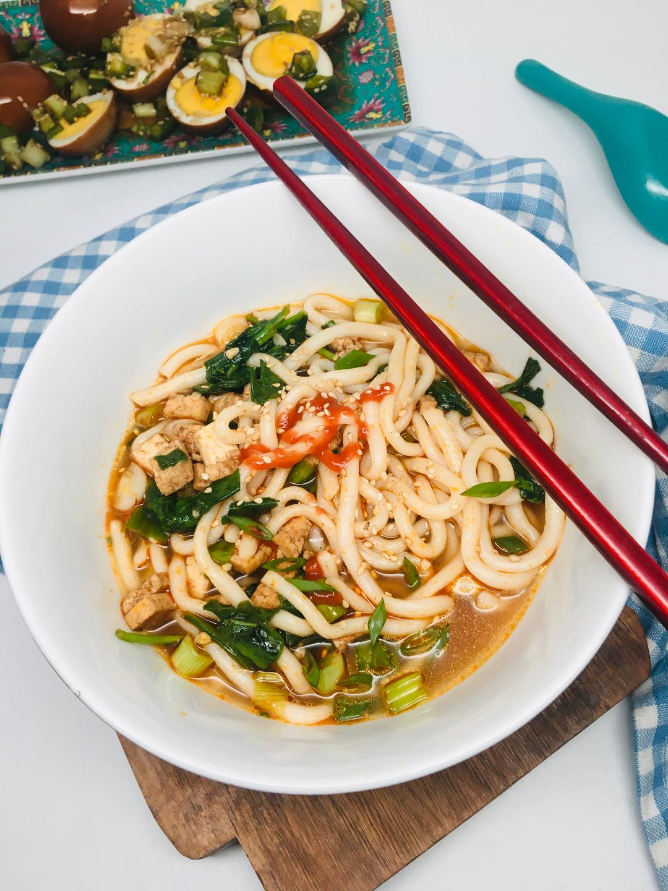
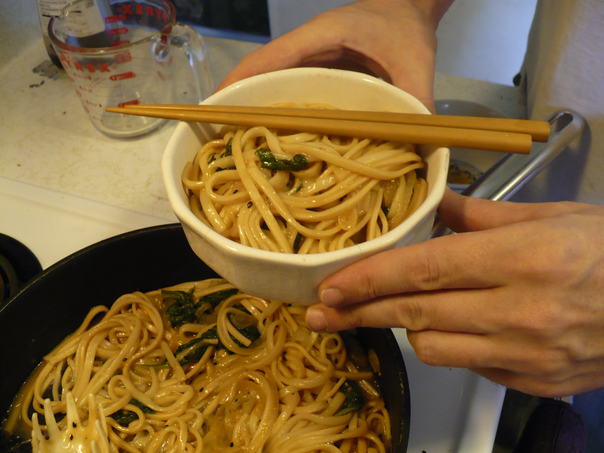

Miso Udon Noodles with Spinach and Tofu


Description:
Vegetarian, umami, broth-free miso noodle dish. Eat as side or on its own.
Ingredients:
This recipe yields 2 servings.
- 1 (7 ounce) package dried udon noodles
- 1 tablespoon salted butter
- 1 tablespoon miso paste
- 1 teaspoon sesame oil
- 1 teaspoon honey
- 1 clove garlic, finely chopped
- 1 cup cubed tofu
- ½ cup water
- 3 cups fresh spinach
- 3 stalks green onions, minced
- 1 tablespoon soy sauce
- 1 dash Sriracha sauce, or to taste
- ¼ teaspoon sesame seeds, or to taste
Steps:
- Bring a large pot of lightly salted water to a boil. Cook udon in boiling water, stirring occasionally, until noodles are partially cooked, 5 to 7 minutes.
- Meanwhile, combine butter, miso paste, sesame oil, and honey in a wok over medium heat and cook until sizzling. Add garlic and saute until fragrant, about 1 minute. Add tofu and cook for about 1 minute.
- Drain udon noodles and add to wok with water. Cook and stir for 3 minutes. Add spinach and green onions; mix until spinach has wilted. Stir in soy sauce.
- Ladle into two bowls. Drizzle with Sriracha and sprinkle sesame seeds on top.